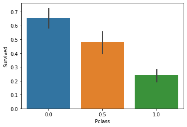
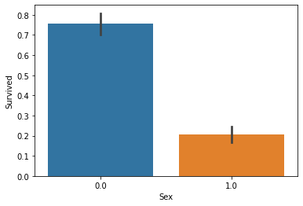
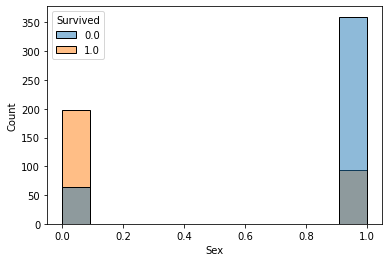
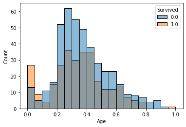

Hva er maskinlæring?
Før vi bygger én eneste modell trenger vi et felles språk: hva det vil si at et program «lærer», hvordan data ser ut, hvordan vi gjør dem klare for en modell, og hvordan hele arbeidsflyten henger sammen. Alt i resten av kurset står på dette fundamentet.
Etter dette kapittelet skal du kunne
- gjengi definisjonene til Samuel og Mitchell og finne T, E og P i et konkret problem
- skille mellom datapunkter, features og target, og mellom kategoriske, binære, diskrete og kontinuerlige variabler
- lese og skrive notasjonen $x^{(i)}_j$, $\mathbf{x}^{(i)}$, $y$ og $f(\mathbf{x}) = y_{pred}$
- plassere en oppgave som veiledet, uveiledet eller forsterkningslæring, og som klassifisering eller regresjon
- forklare dropna, label encoding, one-hot, MinMaxScaler og StandardScaler, og hvorfor vi bare fitter på treningsdata
- velge mellom bar-plott og histogram, og vurdere antall bins
- skille parametre fra hyperparametre, forklare induktiv bias, parametrisk vs. ikke-parametrisk modellering, og trening vs. inferens
- tegne hele maskinlæringsarbeidsflyten fra rådata til inferens
1.1Hva betyr det at et program lærer?
I vanlig programmering skriver vi reglene selv. Vil du lage et spamfilter, kan du skrive «hvis e-posten inneholder GRATIS!!!, merk den som spam». Det fungerer helt til spammerne skriver GR4TIS. Da må du skrive en ny regel, og en til, og en til.
Maskinlæring snur dette på hodet. I stedet for å gi datamaskinen reglene, gir vi den eksempler: tusenvis av e-poster der vi vet svaret. Programmet finner selv mønstrene som skiller spam fra vanlig e-post.
To definisjoner går igjen i faget. Arthur Samuel (1959), som laget et dameprogram som ble bedre ved å spille mot seg selv, sa:
«Machine learning is the field of study that gives computers the ability to learn without being explicitly programmed.»
Tom Mitchell (1997) ga en mer presis, nesten ingeniørmessig definisjon:
«A computer program is said to learn from experience E with respect to some task T and some performance measure P, if its performance on T, as measured by P, improves with experience E.»
Mitchells definisjon er nyttig fordi den tvinger oss til å svare på tre konkrete spørsmål: Hva skal programmet gjøre (T)? Hva lærer det fra (E, nesten alltid data)? Hvordan måler vi om det blir bedre (P)? Hvis du ikke kan svare på P, kan du ikke vite om programmet har lært noe som helst.
T-E-P = «Til Eksamen Pugger» man ikke. Man spør: Task = verbet (klassifisere, predikere, spille), Experience = dataene (eksemplene), Performance = tallet vi måler (andel riktige, gevinst, feil).
| Problem | T (oppgave) | E (erfaring) | P (ytelsesmål) |
|---|---|---|---|
| Spamfilter | Klassifisere e-post som spam / ikke spam | E-poster brukere har merket som spam eller ikke | Andel e-poster klassifisert riktig |
| Samuels dameprogram | Spille dam | Partier spilt mot seg selv | Andel partier vunnet |
| Titanic | Predikere om en passasjer overlevde | Passasjerlister med kjent utfall | Treffsikkerhet (accuracy) på nye passasjerer |
| Boligpris | Estimere salgspris | Tidligere salg med areal, beliggenhet, pris | Gjennomsnittlig kvadratfeil (MSE) |
Fordi den sier hva du må ha på plass før du kan gjøre maskinlæring: data (E), en klart avgrenset oppgave (T) og et mål (P). Mye av resten av kurset handler om P: tapsfunksjoner (kapittel 2) og evalueringsmetrikker (kapittel 3).
Et spamfilter trenes på 50 000 e-poster som brukere har merket som «spam» eller «ikke spam». Hva er E i Mitchells definisjon?
- Å avgjøre om en ny e-post er spam
- Andelen e-poster som blir riktig klassifisert
- De 50 000 merkede e-postene
- Algoritmen som oppdaterer filteret
Et sjakkprogram spiller 10 millioner partier mot seg selv og blir stadig bedre. Hvilke koblinger er riktige? (Flere kan være riktige.)
- T = å spille sjakk
- P = de 10 millioner partiene
- E = partiene programmet har spilt mot seg selv
- P = andel partier vunnet mot en fast motstander
- E = andel partier vunnet
Hva er den viktigste forskjellen mellom Samuels og Mitchells definisjon?
- Mitchell gjør læring målbar: ytelsen på en oppgave, målt med et konkret mål, må bli bedre med erfaring
- Samuel krever at programmet bruker nevrale nettverk, Mitchell ikke
- Mitchell handler bare om veiledet læring, Samuel om alle typer
- Samuels definisjon krever et ytelsesmål, Mitchells ikke
Finn på ditt eget maskinlæringsproblem fra hverdagen (f.eks. Spotify, Vipps, Ruter). Hva er T, E og P? Er P lett å måle?
1.2Data: datapunkter, features og target
Erfaringen E kommer nesten alltid som et datasett: en tabell. Det er to regler å huske:
- Radene er datapunkter (observasjoner, eksempler): én passasjer, én e-post, ett hus.
- Kolonnene er features (variabler, egenskaper): alder, kjønn, areal. Statistikere sier «variabler», maskinlærere sier «features». Begge betyr det samme.
Hvis én av kolonnene inneholder svaret vi vil at modellen skal lære å estimere, kaller vi den target (målvariabel). Når vi har en target for hvert datapunkt, kan vi gjøre veiledet læring (supervised learning): dataene «veileder» modellen med fasit.
Her er et utvalg fra Titanic-datasettet fra Kaggle, som går igjen i forelesningene:
| PassengerId | Pclass | Name | Sex | Age | Survived |
|---|---|---|---|---|---|
| 1 | 3 | Braund, Mr. Owen Harris | male | 22 | 0 |
| 2 | 1 | Cumings, Mrs. John Bradley | female | 38 | 1 |
| 3 | 3 | Heikkinen, Miss. Laina | female | 26 | 1 |
| 4 | 1 | Futrelle, Mrs. Jacques Heath | female | 35 | 1 |
| 5 | 3 | Allen, Mr. William Henry | male | 35 | 0 |
| 6 | 3 | Moran, Mr. James | male | ? | 0 |
| 7 | 1 | McCarthy, Mr. Timothy J | male | 54 | 0 |
| 8 | 3 | Palsson, Master. Gosta Leonard | male | 2 | 0 |
| 9 | 2 | Montvila, Rev. Juozas | male | 27 | 1 |
PassengerId, Pclass, Name, Sex og Age er features, og Survived er target, hvis målet er å lage en modell som beregner sjansen for at en passasjer overlever.
Typer variabler
Ikke alle kolonner er like. Typen avgjør hva vi må gjøre med dem før en modell kan bruke dem.
| Kvalitative (kategoriske) | Kvantitative (numeriske) | |
|---|---|---|
| Representerer | Kategorier, et endelig antall verdier | Målbare tall som kan sorteres og regnes med |
| Eksempler | Sjanger {action, komedie, …}, aldersgruppe {ung, …, gammel}, frukt {eple, banan, …} | Inntekt, alder, antall lyttere, areal, nedbørsmengde, temperatur |
| Undertyper | Binær: nøyaktig to verdier (male/female, 0/1). Ordinal: har en naturlig rekkefølge (liten < middels < stor). Nominal: ingen rekkefølge (eple, banan). | Diskret: tellbare verdier (antall søsken: 0, 1, 2, …). Kontinuerlig: kan ta alle verdier i et intervall (alder 22.5, temperatur). |
| Før modellen | Må ofte enkodes til tall | Kan brukes direkte, men bør ofte skaleres |
«Den er et tall, altså er den kvantitativ.» Nei! Pclass er lagret som 1, 2, 3, men det er kategorier (første, andre, tredje klasse). Det gir ikke mening å si at «andre klasse er gjennomsnittet av første og tredje». Spør deg selv: gir det mening å legge sammen eller ta gjennomsnitt? Hvis nei, er variabelen kategorisk. Postnumre og PassengerId er andre klassiske eksempler.
Forelesningsnotatene har en oppgave til dette. Tenk deg om før du svarer!
Se på Titanic-tabellen. Hvilke variabler er kategoriske? (Velg alle som passer, men la være å ta med tvilstilfeller.)
- Pclass
- Age
- Sex
- Survived
- Name
Hvilke variabler i Titanic-tabellen er binære?
- Sex og Pclass
- Bare Survived
- Survived og Age
- Sex og Survived
Hvilke variabler bør vi ikke bruke som features i en enkel modell for overlevelse, og hvorfor?
- PassengerId og Name, fordi de ikke inneholder informasjon om egenskapene til passasjeren som en enkel modell kan bruke
- Age og Pclass, fordi de er på helt ulik skala
- Sex, fordi den er en streng og ikke kan brukes
- Age, fordi den har en manglende verdi
En Id kan i verste fall være skadelig: hvis datasettet er sortert slik at overlevende kom først, kan modellen lære «lav Id = overlevde». Det fungerer på dette datasettet og ingen andre steder. Modellen har da lært en tilfeldighet i måten data ble samlet på, ikke noe om virkeligheten.
Notatene sier at Name ikke inneholder relevant informasjon for modellene våre. Finnes det likevel noe i navnefeltet som kunne vært nyttig, hvis du trakk det ut som en egen feature?
1.3Notasjon og hva modellen skal gjøre
Når vi har tatt ut variablene vi ikke vil bruke, gir vi resten korte navn. Dette er notasjonen fra forelesningsnotatene, og den brukes på eksamen:
| $x_1$ (Pclass) | $x_2$ (Sex) | $x_3$ (Age) | $y$ (Survived) | |
|---|---|---|---|---|
| $\mathbf{x}^{(1)}$ | 3 | male | 22 | 0 |
| $\mathbf{x}^{(2)}$ | 1 | female | 38 | 1 |
| $\mathbf{x}^{(3)}$ | 3 | female | 26 | 1 |
| $\mathbf{x}^{(4)}$ | 1 | female | 35 | 1 |
| $\mathbf{x}^{(5)}$ | 3 | male | 35 | 0 |
| $\mathbf{x}^{(6)}$ | 3 | male | ? | 0 |
| $\mathbf{x}^{(7)}$ | 1 | male | 54 | 0 |
| $\mathbf{x}^{(8)}$ | 3 | male | 2 | 0 |
| $\mathbf{x}^{(9)}$ | 2 | male | 27 | 1 |
- Indeks oppe, i parentes: hvilket datapunkt (rad). $\mathbf{x}^{(2)}$ er passasjer nummer 2. Parentesen er der for at vi ikke skal tro det er en eksponent: $x^{(2)}$ er ikke $x^2$.
- Indeks nede: hvilken feature (kolonne). $x_3$ er Age.
- Begge: én celle. $x^{(2)}_3 = 38$ er alderen til passasjer 2.
- Fet x er en vektor, altså en hel rad: $\mathbf{x}^{(1)} = (x^{(1)}_1, x^{(1)}_2, x^{(1)}_3) = (3, \text{male}, 22)$.
- $y^{(i)}$ er target for datapunkt $i$. Her er $y^{(2)} = 1$.
Oppgaven vi vil løse for Titanic (likning 1 i notatene)
$$\underbrace{(\text{Pclass}, \text{Sex}, \text{Age})}_{\text{features } \mathbf{x}^{(i)} = (x^{(i)}_1,\, x^{(i)}_2,\, x^{(i)}_3)} \;\longrightarrow\; \underbrace{\text{Survived}}_{\text{target } y^{(i)}}$$«Oppe = person, nede = egenskap.» Hodet (oppe) sier hvem, føttene (nede) sier hva. $x^{(i)}_j$ = «person $i$ sin egenskap $j$».
Bruk tabellen over. Hva er $x^{(8)}_3$?
Hva er $x^{(4)}_2$ i tabellen over?
- 35
- female
- 1
- $\mathbf{x}^{(4)}$ opphøyd i andre
Hva skal modellen gjøre?
Vi har features $\mathbf{x}$ og targets $y$, og vi vil estimere $y$ for nye $\mathbf{x}$ basert på sammenhengene mellom kjente $\mathbf{x}$ og $y$. For Titanic vil vi lage en modell $f$ som estimerer sannsynligheten for å overleve gitt verdiene i $\mathbf{x}$:
Modellens prediksjon
$$f(\mathbf{x}) = y_{pred} \approx p(y = 1 \mid \mathbf{x})$$Streken $\mid$ leses «gitt». $p(y=1 \mid \mathbf{x})$ er en betinget sannsynlighet: sannsynligheten for å overleve gitt at du er en 38 år gammel kvinne på første klasse. Det er ikke det samme som den totale andelen overlevende. Notatene skriver kort $p(y \mid \mathbf{x})$.
Du vil også se $\hat{y}$ («y-hatt») brukt om prediksjonen. Det betyr det samme som $y_{pred}$.
For Titanic-modellen gir $f(\mathbf{x}^{(2)}) = 0.93$. Hva er den beste tolkningen?
- 93 % av alle passasjerer overlevde
- Passasjer 2 overlevde med 93 % sikkerhet, fordi $y^{(2)} = 1$
- Modellen estimerer at sannsynligheten for å overleve, gitt features til passasjer 2, er 0.93
- Modellen har 93 % treffsikkerhet
1.4Kartet: typer maskinlæring
Maskinlæring deles grovt inn i tre familier, avhengig av hva slags erfaring E vi har:
- Veiledet læring (supervised): Vi har target $y$ for hvert datapunkt. Modellen lærer en avbildning $\mathbf{x} \to y$.
- Uveiledet læring (unsupervised): Vi har bare $\mathbf{x}$, ingen fasit. Modellen leter etter struktur: grupper, retninger, avvik.
- Forsterkningslæring (reinforcement learning): En agent handler i et miljø og får belønning (reward). Ingen fasit per handling, bare en tilbakemelding om hvor godt det gikk.
Innen veiledet læring skiller vi mellom to typer oppgaver, basert på hva target er:
- Klassifisering: target er en kategori (overlevde ja/nei, spam/ikke spam, siffer 0–9).
- Regresjon: target er et kontinuerlig tall (pris, temperatur, strømforbruk).
Veiledet læring
Data med fasit: $(\mathbf{x}, y)$
- Logistisk regresjon (kap. 2)
- Naiv Bayes (kap. 4)
- Beslutningstrær (kap. 5)
- Nevrale nettverk (kap. 9–10)
- Lineær/polynomisk regresjon (kap. 6)
- Regresjonstrær (kap. 7)
- Ensembler: random forest, boosting (kap. 8)
- Evaluering og generalisering (kap. 3, 7)
Uveiledet læring
Bare $\mathbf{x}$, ingen fasit
- Clustering: k-means, DBSCAN (kap. 11)
- Dimensjonsreduksjon: PCA, t-SNE (kap. 12)
- Anomalideteksjon (kap. 13)
Forsterkningslæring
Agent, miljø, belønning
- Q-learning, Bellman, DQN (kap. 14)
- Forklarbar KI og etikk (kap. 15)
Logistisk regresjon er en klassifiseringsmodell, til tross for navnet. Den gir en sannsynlighet (et tall mellom 0 og 1), men brukes til å velge en klasse. «Regresjon» i navnet er historisk: modellen er en lineær regresjon sendt gjennom sigmoid-funksjonen (se kapittel 2).
Veiledet = lærer med fasit i boka. Uveiledet = sorterer en haug bilder uten at noen har fortalt hva som er på dem. Forsterkning = hunden som får godbit når den gjør noe riktig, uten at noen viser den hva «riktig» er. Og: klassifisering svarer på «hvilken?», regresjon på «hvor mye?»
Hvilke av disse er regresjonsoppgaver?
- Estimere strømforbruket i et datasenter ut fra nettverkstrafikk
- Avgjøre om en svulst er godartet eller ondartet
- Predikere morgendagens maksimumstemperatur
- Gjenkjenne håndskrevne sifre 0–9
- Predikere om en kunde konverterer (0/1) med logistisk regresjon
En nettbutikk har kjøpshistorikken til 200 000 kunder, men ingen informasjon om hvilke «typer» kunder som finnes. De vil finne naturlige kundegrupper. Hva slags læring er dette?
- Veiledet læring, klassifisering
- Forsterkningslæring
- Veiledet læring, regresjon
- Uveiledet læring (clustering)
1.5Preprosessering: gjør dataene klare
Notatene stiller et godt spørsmål: Se på Titanic-tabellen igjen. Hva bør vi gjøre før vi plotter (eller modellerer) disse dataene? Prøv selv før du leser videre.
Svaret fra notatene
- Rad 6 mangler en verdi for feature 3 (Age). Det gir feilmelding når vi prøver å plotte eller trene.
- Feature 2 (Sex) er strenger, altså ikke-numeriske verdier som en datamaskin ikke kan plotte eller regne med uten videre.
- Feature 3 er av en helt annen størrelsesorden enn feature 1 og 2, og kan i verste fall gi misvisende plott (og treg eller skjev trening).
Tre problemer, tre verktøy: fjerne rader (dropna), enkode (LabelEncoder) og skalere (MinMaxScaler). Til sammen kalles dette preprosessering.
Manglende verdier: dropna
Den enkleste løsningen er pandas-metoden dropna(), som fjerner alle rader der minst én verdi mangler.
df = df.dropna() # fjerner rad 6 (Age mangler)Vi mister data. I det fulle Kaggle-datasettet mangler alder for 177 av 891 passasjerer, så dropna kaster rundt 20 % av dataene. Hvis det i tillegg er et mønster i hvem som mangler alder (for eksempel at det oftere gjelder tredjeklassepassasjerer), blir de gjenværende dataene skjeve. Et alternativ er imputering: fyll inn f.eks. gjennomsnittet eller medianen. Da må det gjennomsnittet regnes ut på treningsdataene, av samme grunn som for skalering nedenfor.
Enkoding: fra kategorier til tall
En LabelEncoder (sklearn) gir hver kategori et unikt heltall. For Sex kan «female» bli 0 og «male» 1 (LabelEncoder sorterer alfabetisk, så det blir akkurat slik). For en binær variabel er dette helt greit.
from sklearn.preprocessing import LabelEncoder
le = LabelEncoder()
df["Sex"] = le.fit_transform(df["Sex"]) # female → 0, male → 1Men tenk på en variabel som Embarked {C, Q, S} eller Region med fem verdier. Label encoding gir C=0, Q=1, S=2. Plutselig «tror» modellen at Q ligger mellom C og S, og at avstanden fra C til S er dobbelt så stor som fra C til Q. For en lineær modell betyr det at effekten av å gå fra C til Q må være halvparten av effekten fra C til S. Det er en kunstig rekkefølge vi har funnet på.
One-hot-enkoding løser dette: hver kategori får sin egen 0/1-kolonne.
| Embarked | Label encoding | is_C | is_Q | is_S |
|---|---|---|---|---|
| C | 0 | 1 | 0 | 0 |
| Q | 1 | 0 | 1 | 0 |
| S | 2 | 0 | 0 | 1 |
Nå har alle havnene samme avstand fra hverandre, og en lineær modell kan gi hver havn sin egen vekt. Prisen er flere kolonner: en variabel med $k$ kategorier blir $k$ kolonner (eller $k-1$ hvis vi dropper én, siden den siste er gitt av de andre).
Label encoding er greit for binære variabler, for ordinale variabler der rekkefølgen er ekte (liten < middels < stor), og for beslutningstrær, som bare splitter på terskler og ikke regner med verdiene. One-hot er tryggest for nominale variabler i modeller som regner med tallene (lineære modeller, nevrale nett, avstandsbaserte metoder).
Du bruker label encoding på variabelen Region med verdiene {Nord, Sør, Øst, Vest, Midt} og trener en logistisk regresjon. Hva er hovedproblemet?
- Logistisk regresjon kan ikke bruke heltall som input
- Modellen tolker tallene som om regionene har en rekkefølge og jevne avstander, selv om de ikke har det
- Label encoding gir for mange kolonner
- Label encoding fjerner informasjon om hvilken region det er
Region har 5 mulige verdier. Hvor mange kolonner får du med vanlig one-hot-enkoding (uten å droppe noen)?
- 1
- 3, fordi $2^3 \geq 5$
- 5
- 4, alltid
Skalering: samme størrelsesorden
Pclass går fra 1 til 3, kjønn fra 0 til 1, alder fra 0 til 80, og billettpris fra 0 til over 500. Hvorfor er det et problem?
- Gradient descent (kapittel 2): gradienten for en vekt er proporsjonal med verdien til featuren. Store features gir store gradientsteg, små features gir små. Med én læringsrate for alle blir treningen ustabil for den ene og treg for den andre.
- Avstandsbaserte metoder (k-means, kNN, kapittel 11): avstanden domineres helt av featuren med størst tall. 10 år i alder ville betydd mer enn å bytte kjønn.
- Plott: features med små verdier blir usynlige ved siden av store.
To vanlige skalerere fra sklearn:
MinMaxScaler: til intervallet $[0,1]$
$$x' = \frac{x - x_{min}}{x_{max} - x_{min}}$$StandardScaler: gjennomsnitt 0, standardavvik 1
$$x' = \frac{x - \mu}{\sigma}$$MinMax gir garantert verdier i $[0,1]$ på dataene den ble fittet på. StandardScaler gir ingen fast grense, men verdiene sier «hvor mange standardavvik fra snittet». Begge regnes ut per feature (per kolonne).
En feature har verdiene $2, 4, 10, 6$. Hva blir verdien $6$ etter MinMax-skalering?
En feature har verdiene $2, 4, 4, 4, 5, 5, 7, 9$. Gjennomsnittet er $\mu = 5$ og standardavviket er $\sigma = 2$. Hva blir verdien $9$ etter standardisering?
Legg merke til to ting. (1) Med MinMax blir de åtte vanlige punktene presset sammen i et stadig smalere område nær 0 jo lenger ut outlieren er, fordi én ekstrem verdi bestemmer $x_{max}$. (2) StandardScaler påvirkes også (både $\mu$ og $\sigma$ drar med seg outlieren), men ingen enkeltverdi låses til en fast grense. Ingen av dem «fjerner» outliers; det er en egen vurdering.
En feature har verdier mellom 10 og 50, pluss én feilregistrert verdi på 10 000. Hva skjer med de vanlige verdiene etter MinMax-skalering?
- De havner nesten alle svært nær 0, fordi outlieren bestemmer maksimum
- De fordeles jevnt over $[0,1]$, fordi MinMax alltid gir jevn fordeling
- Outlieren fjernes automatisk av MinMaxScaler
- De får gjennomsnitt 0 og standardavvik 1
Den viktigste regelen: fit på trening, transform på test
En scaler har to steg. fit lærer noe fra dataene (min og maks, eller $\mu$ og $\sigma$). transform bruker det den lærte til å endre dataene. fit_transform gjør begge deler på én gang.
from sklearn.preprocessing import StandardScaler
from sklearn.model_selection import train_test_split
X_train, X_test, y_train, y_test = train_test_split(X, y, test_size=0.2) # 1) splitt FØRST
scaler = StandardScaler()
X_train_scaled = scaler.fit_transform(X_train) # 2) lær μ og σ KUN fra treningsdata
X_test_scaled = scaler.transform(X_test) # 3) bruk SAMME μ og σ på testdataTestdataene skal simulere helt nye data modellen aldri har sett, slik som en ny pasient eller en ny kunde etter at modellen er satt i drift. Den nye pasienten finnes ikke da du trente, så du kan ikke ha brukt hennes verdier til å regne ut $\mu$ og $\sigma$. Hvis du fitter scaleren på hele datasettet, lekker informasjon om testdataene inn i treningen. Dette kalles datalekkasje (data leakage).
Den andre feilen er like vanlig: å fitte en ny scaler på testdataene. Da får samme råverdi ulik skalert verdi i trening og test. Modellen lærte at «0.8» betyr 60 år, men i testsettet kan «0.8» bety 45 år. Og i drift, med ett enkelt nytt datapunkt, går det ikke engang an å fitte: min og maks av ett tall er det samme tallet.
Testsettet er eksamen, treningssettet er pensum. Du får ikke se eksamensoppgavene mens du lager formelarket ditt (fit). Formelarket lager du av pensum, og så bruker du det samme arket på eksamen (transform). Å lage nytt formelark på eksamen (fit på test) er like galt som å se oppgavene på forhånd (fit på alt).
Dette er det mest spurte preprosesseringstemaet: eksamen 2024 oppg. 4 (hvilken funksjon brukes på testdata), 2025 del 1.4 (riktig rekkefølge for min–maks-skalering), 2025 del 10.1 (hvilken kodelinje bruker samme skalering på X_test) og 2025 del 1.1 (hvilket preprosesseringssteg er korrekt og nødvendig). Svaret er alltid en variant av: splitt først, fit på trening, transform på test, enkod kategoriske features.
Du har kjørt scaler = MinMaxScaler(); X_tr = scaler.fit_transform(X_train) og trent modellen. Hvilken linje skal du bruke på testdataene?
X_te = MinMaxScaler().fit_transform(X_test), så testdataene også havner i $[0,1]$X_te = scaler.fit(X_test), så scaleren gjenbrukesX_te = scaler.fit_transform(X_test), så testdataene tilpassesX_te = scaler.transform(X_test)
transform bruker min og maks lært fra treningsdataene. MinMaxScaler().fit_transform(X_test) og scaler.fit_transform(X_test) lærer nye verdier fra testdataene, slik at samme råverdi får ulik skalert verdi i trening og test. scaler.fit(X_test) returnerer selve scaler-objektet (ikke transformerte data), og overskriver dessuten det den lærte fra treningsdataene.Hva er riktig rekkefølge når du bruker StandardScaler og vil evaluere modellen ærlig?
- Fit scaleren på hele datasettet, splitt i trening og test, tren
- Splitt, fit én scaler på trening og en annen på test, tren
- Splitt, fit scaleren på trening, transformer både trening og test med den, tren
- Splitt, fit scaleren på test, transformer trening med den, tren
En MinMaxScaler er fittet på treningsdata der alder gikk fra 10 til 50. I testsettet dukker det opp en passasjer på 60 år. Hva blir den skalerte verdien?
Et datasett har features Fylke (kategorisk, 11 verdier), Månedlig_bruk (kontinuerlig) og Premium (yes/no), og target Sagt_opp (0/1). Du skal trene logistisk regresjon. Hvilket steg er både korrekt og nødvendig?
- Fjerne Fylke og Premium, fordi logistisk regresjon bare støtter numeriske features
- Standardisere Sagt_opp slik at den får gjennomsnitt 0
- Gjøre om Fylke og Premium til numeriske verdier (enkode dem) før trening
- Fitte skaleringen av Månedlig_bruk på hele datasettet for å få konsistent skala
Forklar med egne ord hvorfor det å fitte scaleren på hele datasettet gir et for optimistisk testresultat, selv om lekkasjen «bare» gjelder to tall (min og maks).
Å skalere target i en klassifiseringsoppgave. Target $y \in \{0, 1\}$ skal være 0 og 1, fordi tapsfunksjonen for logistisk regresjon bruker nettopp de verdiene. Skalering gjelder features.
1.6Se på dataene: bar-plott og histogram
Etter (og ofte mens) vi preprosesserer, bør vi plotte dataene for å se hvordan features fordeler seg og henger sammen med target. Plotting kan gi idéer til hvordan dataene bør behandles, så plotting og preprosessering skjer gjerne om hverandre.




- Bar-plott viser gjennomsnittet per kategori. Her: gjennomsnittet av Survived (altså andelen som overlevde) for hver klasse og hvert kjønn. Streken på toppen er usikkerheten. Brukes for å sammenligne en størrelse på tvers av kategorier.
- Histogram viser fordelingen av én variabel: hvor mange datapunkter som havner i hvert intervall. Intervallene kalles bins. Her vises én fordeling for Survived=0 og én for Survived=1 oppå hverandre.
Bare fra disse plottene ser vi at førsteklassepassasjerer, kvinner og barn oftere overlevde. «Kvinner og barn først» stemmer med det vi vet fra historien (og fra filmen).
Bar = «hvem gjør det best?» (snitt per gruppe). Histogram = «hvordan ser formen ut?» (fordelingen av én variabel).
Hvor mange bins?
Det finnes ingen allmenngyldig regel, fordi det avhenger av den underliggende fordelingen. Men det finnes to tydelige symptomer:
- Hakkete histogram: for mange bins. Hver bin inneholder for få punkter, og vi ser støy i stedet for form.
- Formløst histogram: for få bins. Hver bin inneholder for mange punkter, og detaljer (som en topp for barn) forsvinner.
Histogrammet ditt over husstandsinntekt ser veldig hakkete ut, med mange tomme eller nesten tomme stolper mellom høye stolper. Hva er den mest sannsynlige årsaken?
- For få bins, så hver bin inneholder for mange datapunkter
- Dataene må skaleres før de kan plottes
- For mange bins, så hver bin inneholder for få datapunkter
- Du burde brukt bar-plott, fordi inntekt er kategorisk
Du vil sammenligne andelen som overlevde i hver av de tre billettklassene. Hvilket plott passer best?
- Bar-plott med Pclass på x-aksen og gjennomsnittet av Survived på y-aksen
- Histogram av Pclass med mange bins
- Histogram av Survived
- Et histogram av alder for hver klasse
1.7Modeller: parametre, hyperparametre og antakelser
Nå har vi rene data. Neste steg er å velge og trene en modell. Før vi gjør det i kapittel 2, trenger vi noen begreper som går igjen gjennom hele kurset.
Parametre vs. hyperparametre
Verdier modellen lærer fra dataene under trening, og som definerer modellen. Eksempel: vektene $w$ og bias $b$ i logistisk regresjon, samlet i $\theta = (w, b)$. Splittene i et beslutningstre.
Verdier vi velger før trening, og som styrer læringsprosessen, men ikke er en del av den ferdige modellen. Eksempel: læringsrate $\eta$, antall epoker, maks dybde i et tre, $k$ i k-means.
Den ferdige modellen er bare $w$ og $b$. Ingen kan se på $w$ og $b$ og si hvilken læringsrate du brukte. Læringsraten påvirket veien dit, ikke hvordan modellen ser ut.
Parametre er det kaken består av, hyperparametre er ovnstemperaturen. Ovnen er ikke en del av kaka, men den avgjør hvordan kaka blir. Spør: «Er dette en del av den ferdige modellen?» Ja = parameter. Nei, men det påvirker treningen = hyperparameter.
Eksamen 2024 oppg. 12: «Hvilken type parameter er læringsraten?» Svaret er hyperparameter. Distraktorene var «testparameter», «modellparameter» og «treningsparameter».
Hvilke av disse er hyperparametre?
- Læringsraten $\eta$ i gradient descent
- Vekten $w_2$ for feature Sex i logistisk regresjon
- Antall epoker
- Maksimal dybde i et beslutningstre
- Bias $b$ i logistisk regresjon
Induktiv bias
Tenk deg at du har sett fem punkter. Hvordan skal du gjette verdien mellom dem? Det finnes uendelig mange kurver som går gjennom alle fem. For å velge én må du anta noe: at sammenhengen er en rett linje, at den er glatt, at like punkter har like svar. Disse antakelsene kalles induktiv bias.
Induktiv bias er antakelsene en modell gjør for å generalisere fra treningsdata til usette data.
| Modell | Induktiv bias (antakelse) |
|---|---|
| Lineær/logistisk regresjon | Sammenhengen er lineær i features; klassene kan skilles av en rett linje (hyperplan). Ingen vekselvirkninger mellom features. |
| Beslutningstre | Dataene kan deles opp med akseparallelle terskler («alder < 10»). |
| k-nærmeste naboer, k-means | Punkter som ligger nær hverandre ligner hverandre (avstand gir mening). |
| Naiv Bayes | Features er betinget uavhengige gitt klassen. |
Uten antakelser kan ingen modell si noe om data den ikke har sett, bare pugge det den har sett. Induktiv bias er altså ikke en feil, men en forutsetning for å lære. Men feil antakelse gir en modell som ikke kan passe dataene uansett hvor lenge vi trener: en rett linje kan aldri skille klasser som ligger i et XOR-mønster.
❓ «What is the model's inductive bias? Why is it important?» (problem 2, logistisk regresjon). Svaret: logistisk regresjon antar en lineær beslutningsgrense. Dataene i problem 2 er ikke lineært separerbare, så modellen på rå features gjør det omtrent som tilfeldig gjetting. Løsningen er feature engineering som lar en lineær modell uttrykke en krum grense. Se kapittel 2.
Eksamen 2024 oppg. 3: «Hva er induktivt bias?» Riktig: «Antakelsene en modell gjør for å generalisere fra treningsdata til usette data.»
Hva er induktiv bias?
- En systematisk skjevhet i treningsdataene, f.eks. at én gruppe er underrepresentert
- Fellesbetegnelsen for overtilpasning og undertilpasning
- Konstantleddet $b$ i en lineær modell
- Antakelsene en modell gjør for å kunne generalisere fra treningsdata til usette data
(1) Bias $b$ = konstantleddet i $z = w\mathbf{x} + b$ (en modellparameter). (2) Induktiv bias = modellens antakelser. (3) Bias i bias–varians = systematisk feil fordi modellen er for enkel (kapittel 7). (2) og (3) henger sammen: en sterk og feil antakelse gir høy bias i betydning (3).
Hvorfor kan ingen modell lære uten induktiv bias? Tenk på fem treningspunkter og et nytt punkt midt mellom to av dem.
Parametrisk vs. ikke-parametrisk modellering
- Parametrisk: formen på $f$ er gitt på forhånd, og treningen går ut på å tilpasse parametrene. Lineær og logistisk regresjon: formen er $\sigma(w\mathbf{x}+b)$, og vi finner $w$ og $b$. Antall parametre er fast, uansett hvor mye data vi har.
- Ikke-parametrisk: formen på $f$ er ikke gitt, men bygges fra dataene. Beslutningstrær: treningen går ut på å bygge treet og velge splittkriterier som deler opp datarommet. Treet kan vokse seg større jo mer data vi har.
Notatene peker også på en annen forskjell: i en regresjonsmodell multipliseres dataene med parametre og legges sammen. I et beslutningstre flyter dataene gjennom modellen uten å transformeres: hver node splitter dataene, men endrer dem ikke.
«Ikke-parametrisk» betyr ikke «har ingen parametre». Et tre har masse tall (terskler, hvilke features det splitter på). Poenget er at antall og struktur ikke er låst på forhånd, men bestemmes av dataene. Noen ikke-parametriske metoder, som t-SNE og DBSCAN (kapittel 12, 11), lager ikke engang en modell som kan brukes på nye datapunkter.
Hvilket utsagn om parametrisk og ikke-parametrisk modellering er riktig?
- Et beslutningstre er parametrisk, fordi det har terskelverdier i hver node
- Logistisk regresjon er parametrisk: funksjonsformen er gitt, og treningen tilpasser $w$ og $b$
- Ikke-parametriske modeller har ingen tall som læres fra data
- Parametriske modeller får flere parametre jo mer data de trenes på
Trening vs. inferens, og fit/predict
- Trening (training, fitting): parametrene tilpasses treningsdataene. Kan være tregt og regnekrevende, og gjøres én gang (eller av og til).
- Inferens (inference): den ferdige modellen, med låste parametre, brukes til å gi prediksjoner på nye data. Skal ofte være raskt, for eksempel når en app svarer en bruker.
I kode heter dette nesten alltid fit og predict. Navnene er så standard i biblioteker som scikit-learn at notatene anbefaler å bruke dem også når du skriver modellen selv fra bunnen:
model = LogisticRegression(learning_rate=0.01, epochs=30) # hyperparametre velges her
model.fit(X_train, y_train) # trening: lærer w og b
predictions = model.predict(X_test) # inferens: bruker w og bSamme mønster gjelder scalere: fit lærer, transform bruker. Ser du fit, skal du spørre: «Hvilke data lærer vi fra her, og er det lov?»
Et sykehus har en ferdig trent modell som vurderer røntgenbilder. Et nytt bilde kommer inn og modellen gir en vurdering. Hva kalles dette steget?
- Inferens: modellen bruker parametrene den allerede har til å predikere
- Trening, fordi modellen får nye data
- Validering, fordi vi sjekker et nytt bilde
- Fitting, fordi bildet tilpasses modellen
predict). Trening og fitting betyr at parametrene oppdateres fra data. Validering er å måle ytelse på et eget datasett med kjent fasit for å velge hyperparametre; her finnes ingen fasit.1.8Generalisering og arbeidsflyten
Et sentralt mål i maskinlæring er å lage modeller som generaliserer, altså gjør det godt på nye data. Å gjøre det bra på treningsdataene er lett: en modell kan bare pugge dem. Derfor deler vi alltid datasettet i minst to deler:
- Treningsdata (den største delen, ofte 70–80 %): brukes til å tilpasse parametrene.
- Testdata (den minste delen): røres ikke før modellen er ferdig, og brukes én gang til å evaluere den før den tas i bruk.
from sklearn.model_selection import train_test_split
X_train, X_test, y_train, y_test = train_test_split(X, y, test_size=0.2, random_state=42)I praksis vil vi også prøve ulike hyperparametre. Da trenger vi en tredje del, valideringsdata, slik at vi kan sammenligne valg uten å bruke testdataene. Det kommer vi tilbake til i kapittel 7.
Eksamen 2025 del 10.3: hvilken funksjon splitter datasettet i trening og test? sklearn.model_selection.train_test_split(X, y). Distraktorene var oppdiktede funksjoner som numpy.random.separate og pandas.Series.split_dataset.
Hvis du kikker på testresultatet, justerer modellen, og kikker igjen, har du i praksis trent på testdataene. Testresultatet slutter å være et ærlig estimat av ytelsen på nye data. Det er derfor valideringsdata finnes: de tar støyten for all prøving og feiling, så testsettet forblir urørt.
Trening = øvingsoppgaver. Validering = prøveeksamen (kan tas mange ganger). Test = den ekte eksamenen (én gang). Inferens = jobben etterpå.
Du prøver 20 ulike læringsrater og velger den som gir best resultat på testsettet. Hva er problemet?
- Ingen problem; det er dette testsettet er til for
- Testsettet har påvirket et modellvalg, så testresultatet blir et for optimistisk estimat av ytelsen på nye data
- Læringsraten er en modellparameter og skal ikke velges
- Det er for mange læringsrater; man bør prøve maks 5
Du har 1000 datapunkter. Du setter av 20 % til test, og deretter 20 % av det som er igjen til validering. Hvor mange datapunkter er i valideringssettet?
Du skal fylle inn manglende alder med gjennomsnittsalderen (imputering) i stedet for å bruke dropna. Hvor i arbeidsflyten (figur 1.3) skal gjennomsnittet regnes ut, og hvorfor?
fit, skal fittes på treningsdata.Oppsummering
- Mitchell: et program lærer fra erfaring E på oppgave T målt med P, hvis P blir bedre med E. Samuel: læring uten eksplisitt programmering.
- Rader = datapunkter, kolonner = features, og kolonnen med fasit er target $y$. Med target kan vi gjøre veiledet læring.
- Variabler er kategoriske (nominale, ordinale, binære) eller kvantitative (diskrete, kontinuerlige). Tall betyr ikke automatisk kvantitativ (Pclass, Id).
- Notasjon: $x^{(i)}_j$ = datapunkt $i$, feature $j$. Modellen $f(\mathbf{x}) = y_{pred}$ estimerer $p(y \mid \mathbf{x})$.
- Veiledet (klassifisering = kategori, regresjon = tall), uveiledet (struktur uten fasit), forsterkning (belønning).
- Preprosessering: dropna (mister data), LabelEncoder (gir kunstig rekkefølge for nominale kategorier; one-hot unngår det), MinMaxScaler ($[0,1]$, følsom for outliers) og StandardScaler (snitt 0, std 1).
- Splitt først, fit på trening, transform på test. Ellers får du datalekkasje og et for optimistisk testresultat.
- Bar-plott = snitt per kategori; histogram = fordeling. Hakkete histogram = for mange bins.
- Parametre læres og utgjør modellen; hyperparametre (læringsrate, epoker) velges og styrer treningen.
- Induktiv bias = antakelsene som lar modellen generalisere. Logistisk regresjon antar lineær beslutningsgrense.
- Parametrisk (formen gitt, tilpass parametre) vs. ikke-parametrisk (formen bygges fra data, f.eks. trær).
- Arbeidsflyt: data → rydding → split → preprosessering (fit på trening) → trening → validering → test (én gang) → inferens.